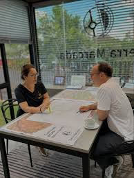
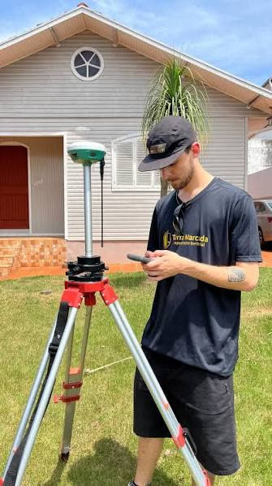

Conversa
Entendemos o que você precisa, vemos a área e dizemos quais documentos são necessários.
Início/Quem somos
A Terra Marcada faz mapeamento territorial e regularização de imóveis em Ijuí e região.
Cada trabalho passa por uma equipe especializada, do primeiro contato à entrega da documentação.
Quatro etapas, sempre explicadas antes de começar.
Entendemos o que você precisa, vemos a área e dizemos quais documentos são necessários.
Definimos o plano de voo, os pontos de controle e o prazo, para você saber o que esperar.
Drone e equipamento GNSS percorrem o terreno e registram as medidas com precisão.
Você recebe os mapas e a documentação, e acompanhamos o processo até o fim, inclusive a regularização.
Contato para quem quer regularizar o imóvel, tirar dúvidas e entender cada passo do processo.
Trabalho feito com os mapas sobre a mesa e os equipamentos no terreno.

